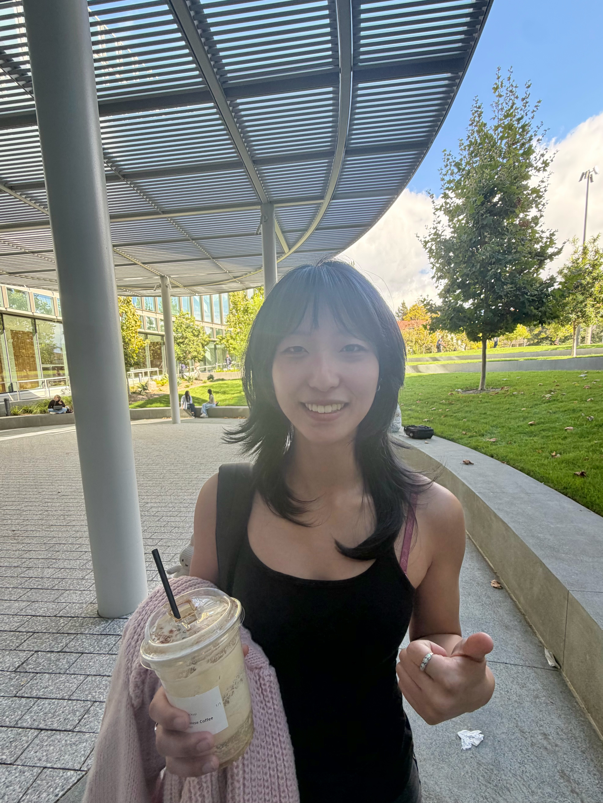
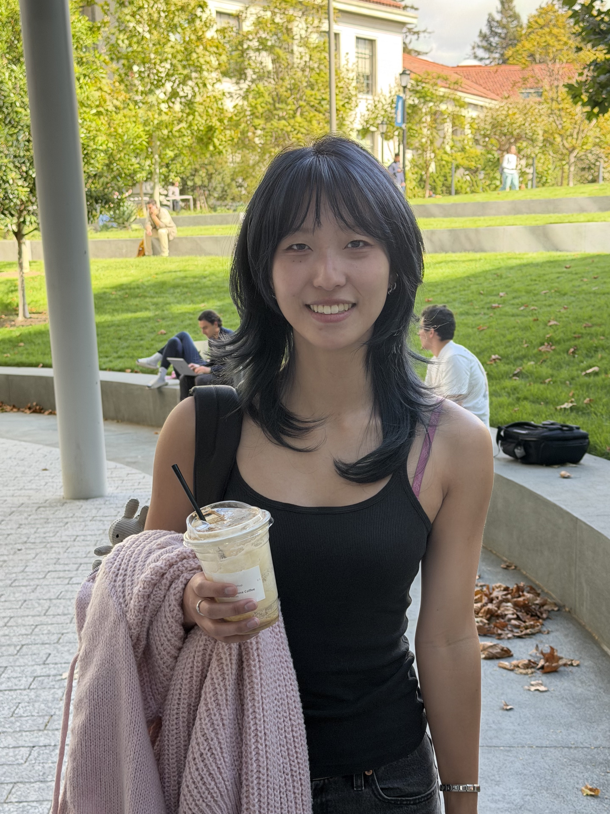
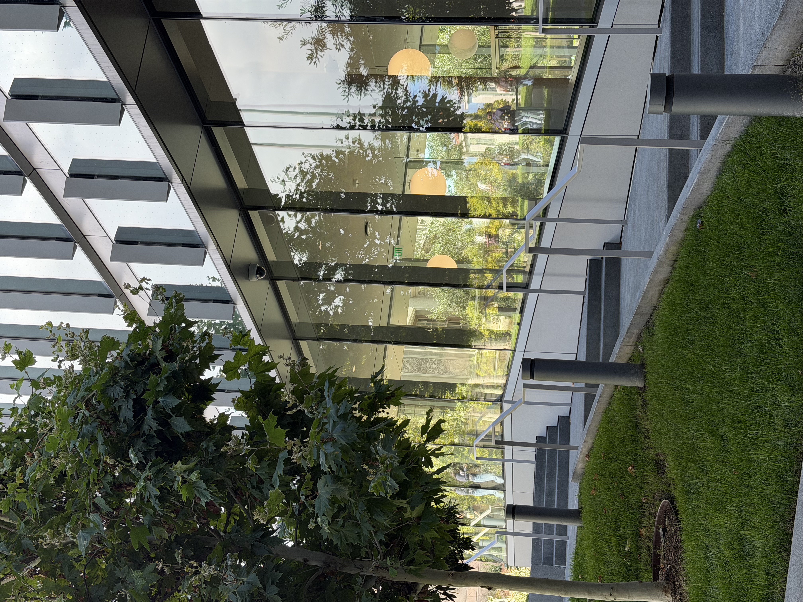
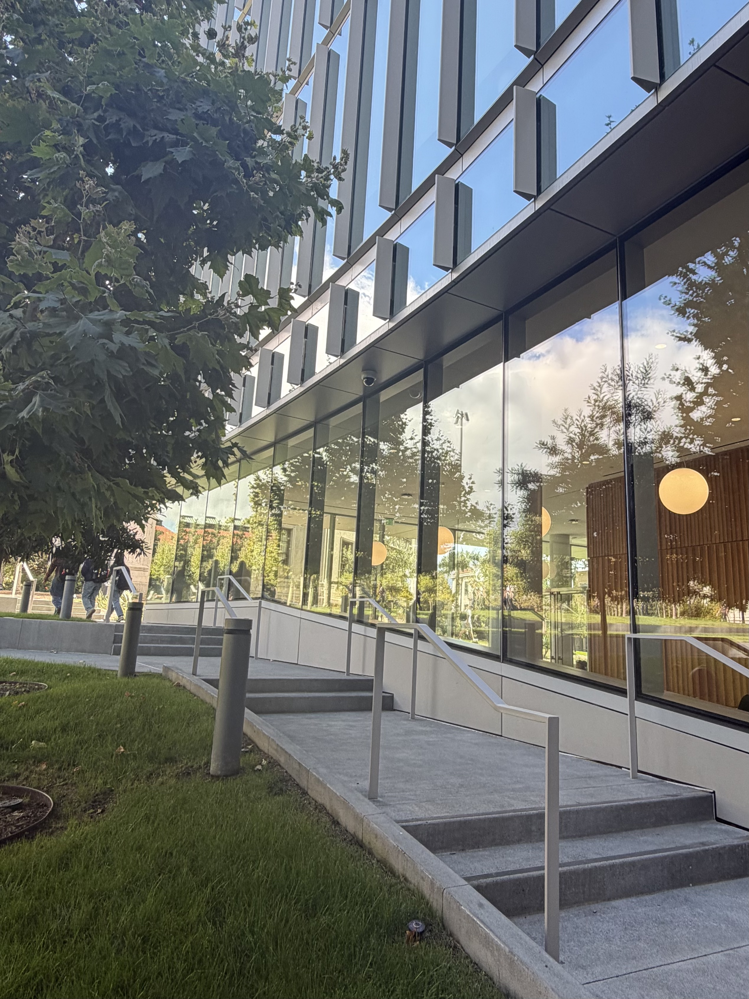

00 Becoming Friends With Your Camera
CS180: Intro to Computer Vision and Computational Photography
Part 1 — Selfie: The Wrong Way vs. The Right Way
Close-up selfie compared to a photo taken from farther back and zoomed in. The close-up selfie is distorted because your nose is a lot closer to the camera than the rest of your face, which makes a big difference at that distance.


Part 2 — Architectural Perspective Compression
Building photographed zoomed-in, then again up close without zoom. The second photo looks like it has a lot more depth, again because at that distance, the edge of the building is a lot closer proportionally than the rest of the building.


Part 3 — The Dolly Zoom
Sequence of stills moving the camera back while zooming in combined into an animated GIF.
Reflections
These three experiments all lead back to the same concept, which is that the captured depth in an image is based on the ratio of distances between the objects and the camera.